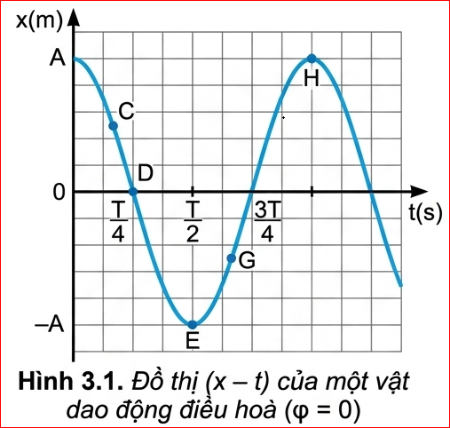
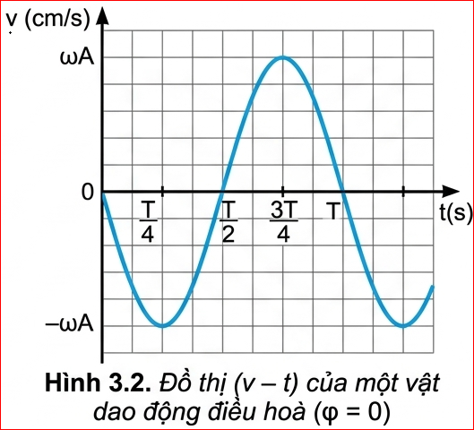
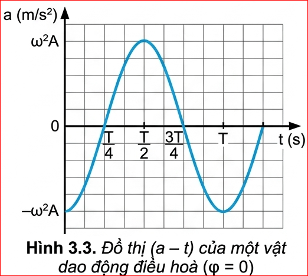
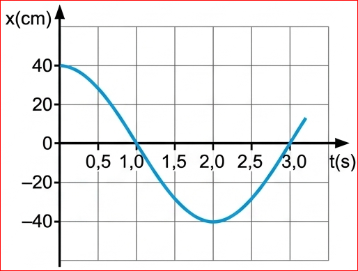

Ta có thể dựa vào đồ thị \( (x-t) \) của dao động điều hoà để xác định vận tốc và gia tốc của vật được không?
I. VẬN TỐC CỦA VẬT DAO ĐỘNG ĐIỀU HOÀ
Như đã biết, vận tốc tức thời của một vật được xác định bằng công thức: \( v = \frac{\Delta x}{\Delta t} \) (với \(\Delta t\) rất nhỏ), tức là bằng độ dốc của đồ thị \( (x-t) \) tại điểm đang xét.
Để đơn giản, ta hãy xét một vật dao động điều hoà có đồ thị \( (x-t) \) được chỉ trên Hình 3.1. Ta nhận thấy độ dốc của đồ thị, tức vận tốc của vật, có giá trị cực đại khi ở vị trí cân bằng rồi giảm dần đến 0 khi vật ra đến vị trí biên. Sau đó độ dốc của đồ thị lại tăng dần đến giá trị cực đại khi vật về đến vị trí cân bằng.

1. Phương trình của vận tốc
Khi học phép tính đạo hàm chúng ta sẽ biết \( v = \frac{\Delta x}{\Delta t} \) (với \(\Delta t\) rất nhỏ) chính là đạo hàm của li độ \( x \) theo thời gian, kí hiệu là \( x' \).
\( x = A \cos(\omega t + \varphi) \)
\( v = x' = -\omega A \sin(\omega t + \varphi) \) (3.1)
Công thức (3.1) là phương trình của vận tốc, có thể biến đổi như sau:
\( v = \pm \omega \sqrt{A^2 - x^2} \) (3.2)
Khi vật ở vị trí cân bằng thì \( v = \pm \omega A \)
Khi vật ở vị trí biên thì \( v = 0 \).
2. Đồ thị của vận tốc
Hình 3.2 là đồ thị của vận tốc của một dao động điều hoà với \( \varphi=0 \). Nó cũng là một đường hình sin.

✋ HOẠT ĐỘNG
Đặt một thước kẻ (loại 20 cm) cho mép của thước tiếp xúc với đồ thị li độ - thời gian (Hình 3.1) ở một số điểm C, D, E, G, H. Từ độ dốc của thước hãy so sánh độ lớn vận tốc của vật tại các điểm C, E, H.
Hướng dẫn:
- Điểm C: Thước có độ dốc âm, vận tốc có giá trị âm, độ lớn vận tốc vừa.
- Điểm D: Thước có độ dốc âm nhiều nhất, độ lớn vận tốc lớn nhất.
- Điểm E: Vị trí biên âm, đồ thị đi ngang, độ dốc bằng 0 \( \Rightarrow \) Vận tốc bằng 0.
- Điểm G: Vị trí có độ dốc dương, giá trị vận tốc dương, độ lớn vừa.
- Điểm H: Vị trí biên dương, đồ thị đi ngang, độ dốc bằng 0 \( \Rightarrow \) Vận tốc bằng 0.
\( \Rightarrow \) Độ lớn vận tốc tại C,G nhỏ hơn D và lớn hơn tại E và H.
?
1. So sánh đồ thị của vận tốc (Hình 3.2) với đồ thị của li độ (Hình 3.1), hãy cho biết vận tốc sớm pha hay trễ pha bao nhiêu so với li độ.
2. Trong các khoảng thời gian từ \( 0 \) đến \( \frac{T}{4} \), từ \( \frac{T}{4} \) đến \( \frac{T}{2} \), từ \( \frac{T}{2} \) đến \( \frac{3T}{4} \), từ \( \frac{3T}{4} \) đến \( T \), vận tốc của dao động điều hoà thay đổi như thế nào?
Lời giải:
1. Từ phương trình \( v = -\omega A \sin(\omega t + \varphi) = \omega A \cos(\omega t + \varphi + \frac{\pi}{2}) \). Ta thấy vận tốc sớm pha \( \frac{\pi}{2} \) so với li độ.
2. Sự thay đổi vận tốc:
- \( 0 \rightarrow \frac{T}{4} \): Vật đi từ biên dương về VTCB, độ lớn vận tốc tăng từ 0 đến cực đại (vận tốc mang dấu âm từ giảm 0 đến \(-A\omega\))
- \( \frac{T}{4} \rightarrow \frac{T}{2} \): Vật đi từ VTCB về biên âm, độ lớn vận tốc giảm từ CĐại đến 0 (vận tốc mang dấu âm, tăng từ \(-\omega A\) đến 0).
- \( \frac{T}{2} \rightarrow \frac{3T}{4} \): Vật đi từ VTCB biên âm về VTCB, độ lớn vận tốc tăng từ 0 đến cực đại(vận tốc mang dấu dương, tăng từ 0 lên \(\omega A\)).
- \( \frac{3T}{4} \rightarrow T \): Vật đi từ VTCB về biên dương, độ lớn vận tốc giảm từ cực đại đến 0 (vận tốc mang dấu dương, giảm từ \(\omega A\) về 0).
II. GIA TỐC CỦA VẬT DAO ĐỘNG ĐIỀU HOÀ
Tương tự như vận tốc, gia tốc tức thời của một vật được xác định bằng công thức: \( a = \frac{\Delta v}{\Delta t} \) (với \(\Delta t\) rất nhỏ), tức là bằng độ dốc của đồ thị vận tốc tại điểm đang xét.
Ta nhận thấy độ dốc của đồ thị Hình 3.2, hay gia tốc của vật, có giá trị bằng 0 khi vật ở vị trí cân bằng, rồi tăng đến giá trị cực đại khi vật ở vị trí biên.
1. Phương trình của gia tốc
Như vậy, gia tốc tức thời của một vật là đạo hàm của vận tốc theo thời gian, kí hiệu là \( v' \).
\( a = v' = -\omega^2 A \cos(\omega t + \varphi) \) (3.3)
Thay \( x = A \cos(\omega t + \varphi) \) vào (3.3) ta được:
\( a = -\omega^2 x \) (3.4)
Khi vật ở vị trí cân bằng \( a = 0 \).
Khi vật ở vị trí biên gia tốc có giá trị cực đại \( a = \pm \omega^2 A \).
2. Đồ thị của gia tốc
Hình 3.3 là đồ thị của gia tốc (với \( \varphi=0 \)), nó cũng là một đường hình sin như li độ và vận tốc.

✋ HOẠT ĐỘNG
1. Dùng thước kẻ (loại 20 cm) để xác định xem trên đồ thị \( (v-t) \) Hình 3.2, tại thời điểm nào độ dốc của đồ thị bằng 0 và tại thời điểm nào độ dốc của đồ thị cực đại. Từ đó, so sánh độ lớn của gia tốc trên đồ thị \( (a-t) \) Hình 3.3 ở các thời điểm tương ứng.
2. Phương trình dao động của một vật là \( x = 5\cos(4\pi t) \) (cm). Hãy viết phương trình vận tốc, gia tốc và vẽ đồ thị li độ, vận tốc, gia tốc theo thời gian của vật.
Hướng dẫn:
1.
- Độ dốc đồ thị \( (v-t) \) bằng 0 tại các đỉnh (vận tốc cực đại), tương ứng gia tốc \( a = 0 \) trên đồ thị \( (a-t) \).
- Độ dốc đồ thị \( (v-t) \) cực đại tại các điểm cắt trục hoành (vận tốc bằng 0), tương ứng độ lớn gia tốc đạt cực đại trên đồ thị \( (a-t) \).
2.
- Phương trình li độ: \( x = 5\cos(4\pi t) \) (cm)
- Phương trình vận tốc: \( v = -A\omega.sin(\omega.t+\varphi) = -20\pi \sin(4\pi t) \) (cm/s)
- Phương trình gia tốc: \( a = -A\omega^2.cos(\omega.t+\varphi) = -80\pi^2 \cos(4\pi t) \) (cm/s²)
?
1. So sánh đồ thị Hình 3.3 và Hình 3.1 ta có nhận xét gì về pha của li độ và gia tốc của một dao động.
2. Trong các khoảng thời gian từ \( 0 \) đến \( \frac{T}{4} \), từ \( \frac{T}{4} \) đến \( \frac{T}{2} \), từ \( \frac{T}{2} \) đến \( \frac{3T}{4} \), từ \( \frac{3T}{4} \) đến \( T \), gia tốc của dao động thay đổi như thế nào?
Lời giải:
1. Từ \( a = -\omega^2 x \), ta thấy gia tốc ngược pha so với li độ (lệch pha \(\pi\)). Trên đồ thị, khi \( x \) cực đại dương thì \( a \) cực đại âm và ngược lại.
2. Sự thay đổi gia tốc:
- \( 0 \rightarrow \frac{T}{4} \): Vật đi từ biên dương về VTCB, độ lớn gia tốc giảm từ cực đại về 0.
- \( \frac{T}{4} \rightarrow \frac{T}{2} \): Vật đi từ VTCB ra biên âm, độ lớn gia tốc tăng từ 0 đến cực đại.
- \( \frac{T}{2} \rightarrow \frac{3T}{4} \): Vật đi từ biên âm về VTCB, độ lớn gia tốc giảm từ cực đại về 0.
- \( \frac{3T}{4} \rightarrow T \): Vật đi từ VTCB ra biên dương, độ lớn gia tốc tăng từ 0 đến cực đại.
CÂU HỎI & BÀI TẬP
?
1. Một vật dao động điều hoà trên trục Ox. Khi vật qua vị trí cân bằng thì tốc độ của nó là \( 20 \text{ cm/s} \). Khi vật có tốc độ là \( 10 \text{ cm/s} \) thì gia tốc của nó có độ lớn là \( 40\sqrt{3} \text{ cm/s}^2 \). Tính biên độ dao động của vật.
2. Hình 3.4 là đồ thị li độ – thời gian của một vật dao động điều hoà. Sử dụng đồ thị để tính các đại lượng sau:
a) Tốc độ của vật ở thời điểm \( t = 0 \text{ s} \).
b) Tốc độ cực đại của vật.
c) Gia tốc của vật tại thời điểm \( t = 1,0 \text{ s} \).

Lời giải: Bài 1:
- Tốc độ cực đại: \( v_{max} = \omega A = 20 \) (1)
- Áp dụng hệ thức độc lập với thời gian cho \( v \) và \( a \):
\( \left(\frac{v}{\omega A}\right)^2 + \left(\frac{a}{\omega^2 A}\right)^2 = 1 \)
\( \Rightarrow \left(\frac{10}{20}\right)^2 + \left(\frac{40\sqrt{3}}{a_{max}}\right)^2 = 1 \)
\( \Rightarrow \frac{1}{4} + \frac{4800}{a_{max}^2} = 1 \Rightarrow \frac{4800}{a_{max}^2} = \frac{3}{4} \Rightarrow a_{max}^2 = 6400 \Rightarrow a_{max} = 80 \text{ cm/s}^2 \)
Ta có \( a_{max} = \omega^2 A = \omega(\omega A) \Rightarrow 80 = \omega.20 \Rightarrow \omega = 4 \text{ rad/s} \).
Từ (1) suy ra Biên độ: \( A = \frac{20}{4} = 5 \text{ cm} \).
Bài 2:
Từ đồ thị Hình 3.4, ta xác định được: Biên độ \( A = 40 \text{ cm} \). Chu kì \( T = 4 \text{ s} \Rightarrow \omega = \frac{2\pi}{T} = \frac{\pi}{2} \text{ rad/s} \).
a) Tại \( t = 0 \text{ s} \), vật đang ở vị trí biên dương (\( x = 40 \text{ cm} \)), do đó tốc độ của vật \( v = 0 \).
b) Tốc độ cực đại: \( v_{max} = \omega A = \frac{\pi}{2} \times 40 = 20\pi \approx 62,8 \text{ cm/s} \).
c) Tại \( t = 1,0 \text{ s} \), vật đi qua vị trí cân bằng (\( x = 0 \)), do đó gia tốc của vật \( a = -\omega^2 x = 0 \).
💡 Em Đã Học
Phương trình của vận tốc và gia tốc của một vật dao động điều hoà có li độ là \( x = A\cos(\omega t + \varphi) \):
\( v = -\omega A \sin(\omega t + \varphi) \)
\( a = -\omega^2 A \cos(\omega t + \varphi) \)
Đồ thị của vận tốc, gia tốc theo thời gian là đường hình sin. Vận tốc của vật dao động sớm pha \( \frac{\pi}{2} \) so với li độ, còn gia tốc của vật dao động ngược pha so với li độ.
Vectơ gia tốc luôn hướng về vị trí cân bằng và có độ lớn tỉ lệ với độ lớn của li độ.
Tại vị trí biên, vận tốc của vật bằng 0, còn gia tốc của vật có độ lớn cực đại. Tại vị trí cân bằng, gia tốc của vật bằng 0 còn vận tốc của vật có độ lớn cực đại.
🌟 Em Có Thể
Sử dụng được đồ thị mô tả dao động điều hoà thu được trên dao động kí có thể suy ra các đại lượng vận tốc, gia tốc của vật trong dao động điều hoà.
BÀI TẬP TRẮC NGHIỆM CỦNG CỐ
BÀI TẬP VẬN DỤNG
Bài 1: Một vật dao động điều hòa với phương trình \( x = 4\cos(10\pi t) \) (cm). Tính tốc độ cực đại và gia tốc cực đại của vật.
Lời giải:
Từ phương trình ta có: \( A = 4 \text{ cm} \), \( \omega = 10\pi \text{ rad/s} \).
- Tốc độ cực đại: \( v_{max} = \omega A = 10\pi \times 4 = 40\pi \text{ cm/s} \).
- Gia tốc cực đại: \( a_{max} = \omega^2 A = (10\pi)^2 \times 4 = 400\pi^2 \approx 3948 \text{ cm/s}^2 \).
Bài 2: Tại vị trí cân bằng, tốc độ của vật là \( 31,4 \text{ cm/s} \). Khi ra đến biên, độ lớn gia tốc là \( 314 \text{ cm/s}^2 \). Tính biên độ dao động. Lấy \( \pi = 3,14 \).
Lời giải:
Tại VTCB: \( v_{max} = \omega A = 31,4 \text{ cm/s} = 10\pi \text{ cm/s} \) (1)
Tại biên: \( a_{max} = \omega^2 A = 314 \text{ cm/s}^2 = 100\pi \text{ cm/s}^2 \) (do \( \pi \approx 3,14 \)) (2)
Lấy (2) chia (1) ta được: \( \frac{\omega^2 A}{\omega A} = \frac{100\pi}{10\pi} \Rightarrow \omega = 10 \text{ rad/s} \).
Thay \(\omega\) vào (1): \( 10.A = 31,4 \Rightarrow A = 3,14 \text{ cm} \).
Bài 3: Một vật dao động điều hoà có tần số góc \( \omega = 2\pi \text{ rad/s} \). Tại thời điểm vật có li độ \( x = 5 \text{ cm} \) thì tốc độ của vật là \( 10\pi\sqrt{3} \text{ cm/s} \). Tính biên độ dao động.
Lời giải:
Áp dụng hệ thức độc lập với thời gian:
\( A^2 = x^2 + \left(\frac{v}{\omega}\right)^2 \)
\( A^2 = 5^2 + \left(\frac{10\pi\sqrt{3}}{2\pi}\right)^2 \)
\( A^2 = 25 + (5\sqrt{3})^2 = 25 + 75 = 100 \)
\( \Rightarrow A = 10 \text{ cm} \).